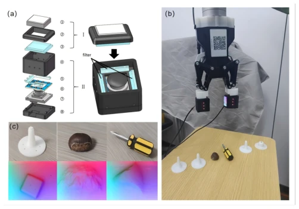
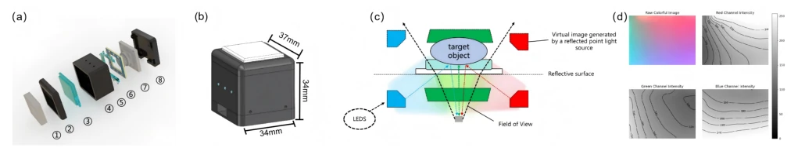
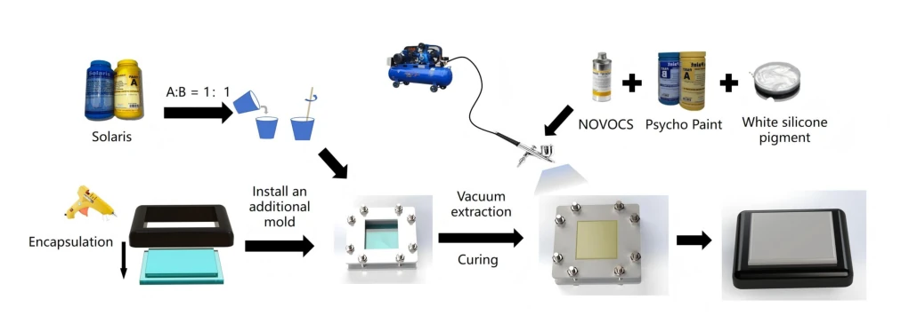
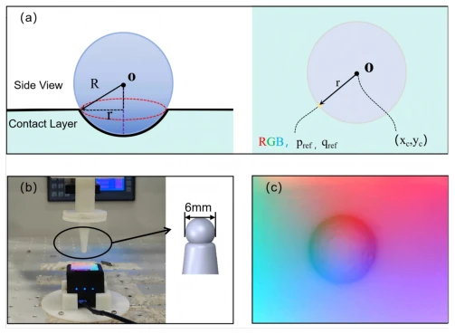
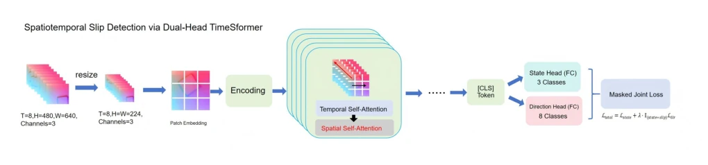
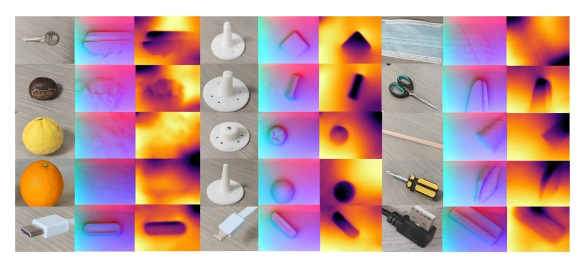
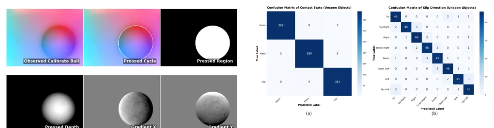
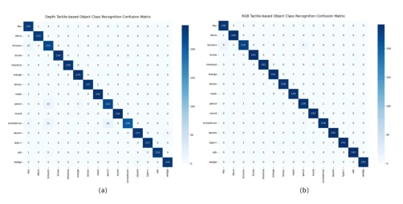
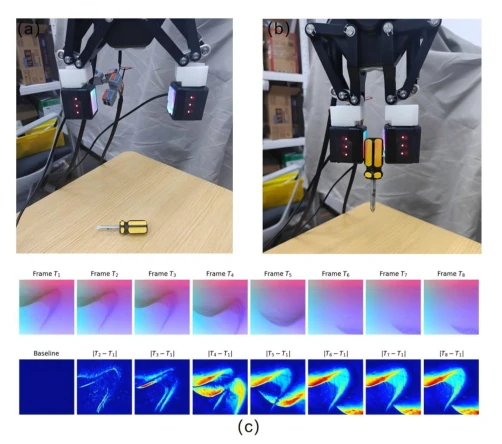

This paper offers a "uniform illumination" remedy to the field of tactile perception. Traditional visual tactile sensors (VTS) either rely on markers (marker-based) or are constrained by specular reflection interference, resulting in the loss of texture details. The authors developed a marker-less sensor that resolves the specular reflection problem through uniform RGB illumination and simultaneously performs depth reconstruction. Algorithmically, a dual-head TimeSformer was employed to jointly learn slip state and direction, achieving high accuracy. However, this scheme relying on specific hardware illumination may require parameter re-tuning when generalized to different lighting environments. Although the dataset is open-source, 15 objects are somewhat limited for "generalization", and depth reconstruction depends on calibration; in practical deployment, slight adjustments in lighting conditions may affect gradient estimation. Overall, the engineering implementation is robust, but the algorithmic innovation is moderate, representing a "good tool" rather than a "new paradigm", suitable for fine manipulation in specific scenarios.
Tactile perception is a core component of robotic manipulation, but existing slip detection datasets are mostly limited to binary classification (slip/no-slip) [18], lacking fine-grained direction perception. Existing VTS sensors often rely on physical markers to estimate tangential force [16], which instead obscures surface texture, limiting the capture of high-resolution geometric features. Furthermore, existing benchmark datasets have limited scale and insufficient classification granularity [17]. To support advanced manipulation, sensors capable of capturing micro-textures without markers are required, along with a fine-grained perception framework capable of distinguishing 8 slip directions.

Fig. 1. (a) Overall structural diagram of the proposed sensor.(b) Dataset collection using the visuotactile sensor for slip status detection.(c) Actual tactile images collected by pressing 15 common objects. These images constitute a slip detection dataset of 7,925 samples and a high-precision material classification dataset of approximately 19,336 images. (The figure shows some of the collected objects.)

Fig. 2. (a) Exploded view of the sensor components. ①Optically clear silicone coated with a white silicone pigment layer. ②Supports the elastomer. ③ Transparent acrylic plate. ④Main housing. ⑤Translucent frosted diffuser. ⑥PCB for RGB illumination. ⑦Miniature camera. ⑧Base plate. (b) The overall dimensions of the sensor are 37 mm × 34 mm × 34 mm. (c) The internal optical path design, which effectively prevents specular highlights generated by the acrylic plate. (d) Actual image captured by the visuo-tactile sensor. Decomposing the image into individual RGB channels demonstrates a uniform intensity distribution and consistent brightness across all channels.
The overall workflow is divided into hardware sensing, data construction, and algorithmic reasoning. In terms of hardware, a customized uniform RGB illumination scheme is adopted, combined with optically transparent silicone and a diffuse coating, eliminating specular highlights and supporting photometric stereo for sub-millimeter depth reconstruction. Regarding data, an RGB-D tactile benchmark dataset containing 15 object categories was constructed, covering static classification and dynamic slip sequences. Algorithmically, a unified perception framework is proposed: dynamic slip detection employs a dual-head TimeSformer, capturing micro-texture displacement through segmented spatio-temporal attention blocks to jointly predict contact state and 8-direction slip; static classification uses ResNet-50 to extract texture features. A masked joint loss function is introduced, calculating direction loss only when the ground truth state is slip, thereby avoiding noise interference.

Fig. 3. Fabrication process of the elastic contact module. The optically clear silicone (Smooth-On Solaris) was first mixed and poured into a customized 3D-printed mold, followed by curing. A custom matte reflection coating, blended from silicone base and white pigment, was then uniformly airbrushed onto the elastomer surface. The final assembled contact module features a compact and easily replaceable design.

Fig. 4. Empirical photometric stereo calibration using a reference sphere. (a) Geometric model of the spherical indentation. The side view illustrates the physical radius R and the projected radial distance r, while the top view demonstrates the mapping relationship from the contact center (xc,yc) and RGB intensities to the surface gradients. (b) The physical calibration setup, where a standard reference sphere with a diameter of 6 mm is pressed into the sensor using a precision three-axis linear stage. (c) The corresponding RGB image captured by the internal miniature camera during the spherical indentation.

Fig. 7. The overall architecture of the proposed spatiotemporal slip detection network based on a dual-head TimeSformer. The input sequence is processed through patch embedding and divided space-time attention blocks to extract dynamic features. A global token is then utilized by dual FC heads to predict the contact state and slip direction, optimized by a masked joint loss.
Experiments were conducted on 15 object categories; the dataset comprises 7925 slip sequences and 19336 static images. The depth reconstruction RMSE reached 0.072mm, demonstrating the effectiveness of the illumination design. For slip detection on unseen objects, the 3-class state prediction accuracy reached 95.5%, and the 8-class direction classification reached 91.5%. Static classification accuracy reached 98.8%. Compared to the depth modality, the RGB modality performed better in texture recognition. The results indicate that the framework possesses robustness in fine-grained perception, but the depth modality performed weaker in direction classification, possibly limited by reconstruction accuracy. Additionally, model initialization utilized pre-trained weights, indicating a strong dependence on pre-trained data, while the effect of training completely from scratch was not explicitly explained.

Fig. 5. The 15 representative daily objects, along with their corresponding high-resolution tactile images and reconstructed depth maps. Benefiting from the uniform illumination, micro-textures and geometric contours are presented with exceptional clarity without specular highlight interference.

Fig. 9. Confusion matrices for dynamic spatiotemporal slip detection on unseen objects. (a) Results for the 3-class contact state prediction (Static, Press, and Slip). (b) Results for the fine-grained 8-class slip direction classification.

Fig. 10. Confusion matrices for dynamic and static visuo-tactile perception tasks, respectively showing the 3-class contact state prediction on unseen objects, the 8-class slip direction classification on unseen objects, and the 15-class static tactile-based object class recognition.
其他图片Other Figures

Fig. 6. Visualization of the real-world grasping process and the corre- sponding tactile data. The figure displays a sequence of continuous raw RGB tactile images captured during dynamic interaction, alongside the corresponding temporal difference maps between consecutive frames.